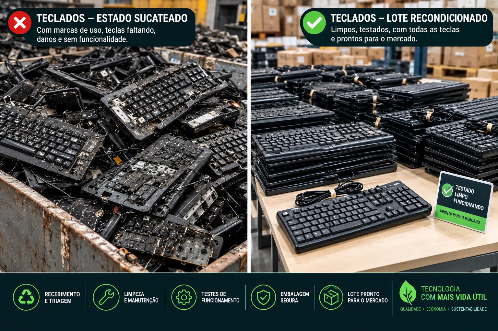
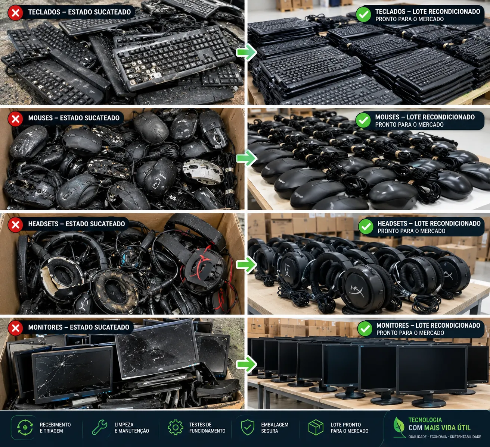
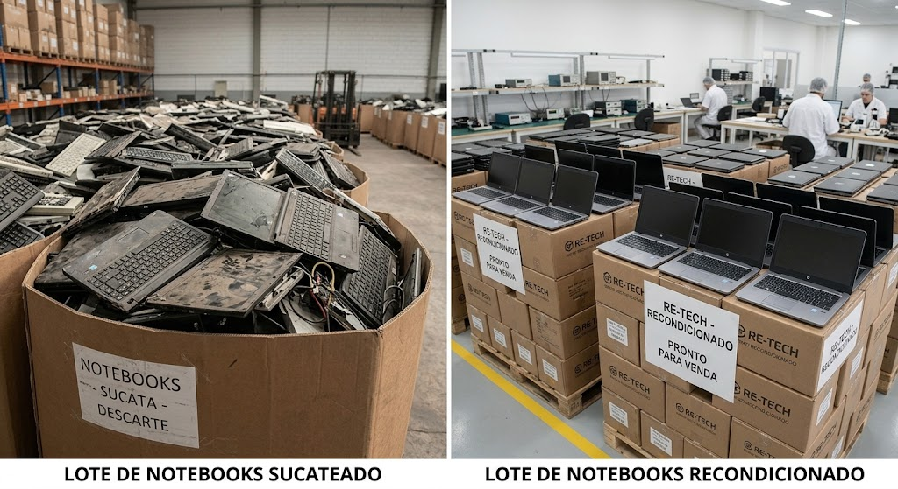
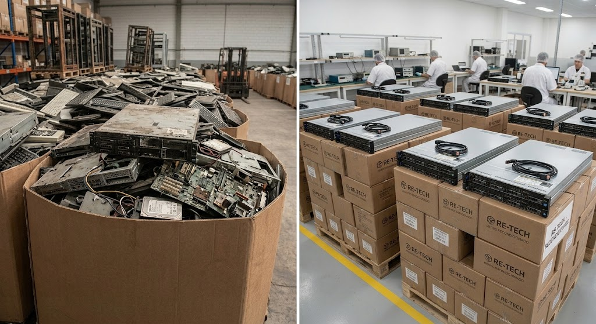

Teclados recondicionados
Teclados com marcas de uso e teclas faltando são limpos, reparados e testados. Voltam completos, funcionando e com o cabo organizado.
Solicitar orçamento →Recebemos lotes de teclados, mouses, headsets, monitores, notebooks e servidores, com seus cabos e plugs. Fazemos a triagem, a limpeza, a manutenção e os testes, e entregamos tudo embalado e pronto para uso.
Veja nossos produtos → Qualidade
Qualidade
Itens testados e funcionando
Equipamentos duráveis por menos
 Sustentabilidade
Sustentabilidade
Menos lixo eletrônico descartado
Veja como um lote muda depois de passar pelo nosso processo.

Lotes recondicionados para empresas, escolas e revendedores.

Teclados com marcas de uso e teclas faltando são limpos, reparados e testados. Voltam completos, funcionando e com o cabo organizado.
Solicitar orçamento →
Notebooks descartados são avaliados e reparados em bancada por nossa equipe técnica e entregues em lotes, prontos para venda.
Solicitar orçamento →
Servidores e componentes são recuperados, testados e embalados, uma opção de menor custo para a infraestrutura de empresas.
Solicitar orçamento →Cada lote passa pelas mesmas cinco etapas, do recebimento à entrega.

Recebemos o lixo eletrônico e separamos o que pode ser recondicionado do que será reciclado.

Higienização, troca de peças e reparos para devolver o aspecto e o funcionamento dos equipamentos.

Cada item é testado antes de seguir. Só sai o que está limpo e funcionando.
Os itens são embalados com cuidado para chegar ao destino sem danos.

Entregamos o lote organizado e identificado, pronto para venda ou uso.
Fale com a gente e descubra como transformar o descarte em novas oportunidades.